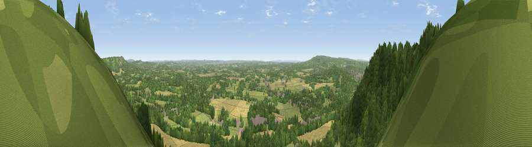

Viewpoint near Box Hill Village
#22040 in England · top 7% of its area beats it · near Box Hill VillageWhere it is
The exact computed spot (TQ 19982 51299). Click the marker for map links.
The view, rendered

A 360° render of this exact spot computed from the terrain model, tree cover and land cover — summer colours, afternoon light, calibrated against photographs of famous viewpoints. Real trees, hedges and buildings will differ in detail.
The panorama
Grey silhouette: terrain skyline in each direction (720 bearings, Earth curvature and refraction included). Dashed green: skyline with trees (+15 m) and buildings (+8 m) as obstacles. Blue strip: how far the ground is visible on each bearing.
Where the view opens
Wedge length = distance to the farthest visible ground on that bearing (vegetation-aware). Rings at 10, 25 and 50 km.
What fills the view
72% woodland · 19% grassland · 7% cropland · 2% built-up
Angular shares of the visible panorama (visual magnitude), not map area. Landscape diversity 0.35 (0–1 Shannon).
Key numbers
More beautiful places nearby
The staircase of upgrades: each row has a higher view potential than everything closer. Driving times are estimates from straight-line distance, calibrated against real road routing — check an actual route before setting out.
| Place | Direction | Drive | Score |
|---|---|---|---|
| Viewpoint near Box Hill Village | W · 1 km | ~2 min | 66.7 |
| Viewpoint near Lower Kingswood | ENE · 4 km | ~9 min | 67.7 |
| Viewpoint near Coldharbour | SW · 10 km | ~19 min | 70.0 |
| Viewpoint near Fernhurst | SW · 36 km | ~54 min | 75.1 |
| Wolstonbury Hill | S · 38 km | ~57 min | 79.6 |
| Chanctonbury Ring | S · 40 km | ~59 min | 87.0 |
| Firle Beacon | SSE · 54 km | ~75 min | 88.9 |
| Viewpoint near Niton | SW · 103 km | ~127 min | 89.2 |
51.24825, -0.28230 · source: osm viewpoint · position refined by local search. Computed location — check access rights before visiting.